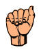

A LITTLE PRACTICE. A NEW WAY TO CONNECT.
Your first signs start here.
Learn a handshape. Try it out. Find your flow.
MAKE IT PERSONAL
Spell your name.
Practice one letter at a time with camera feedback.
Meet the letter L
A simple shape. A great place to start.

The image could not load. Open the image source above.
LOOK · SHAPE · COMPARE
Let your hand follow the picture.
Notice which fingers are curled, where the thumb rests, and the direction the hand faces. Some illustrations use a side view to make the shape clearer.
Alphabet illustrations: public domain, via Wikimedia Commons. Credits
Your turn to sign
Compare your hand with the reference.
Use even light and keep your whole hand in view. Either hand works.
Waiting for camera
Experimental estimate · 88+ and a distinct match required
⌁ Video stays in your browser. Nothing is recorded.
Turn on your camera to check this handshape, or practice with the steps.
LEARN WITH DEAF INSTRUCTORS
See the alphabet in motion.
Watch hand position and movement in an instructor’s demonstration, especially for J and Z.
ASL alphabet with Bill Vicars ↗Open the original YouTube lesson.Letter-by-letter demonstrations ↗Study the alphabet on HandSpeak.On YouTube, choose Settings → Playback speed → 0.5× or 0.25×. Replay the section you want to practice.
These links open independent teaching resources. No affiliation or endorsement is implied.
PUT YOUR HANDS TO THE TEST
Can you sign it from memory?
See a letter, make it on camera, and hold a clear match before time runs out. Guides stay hidden during each attempt.
Random letters · each timeout counts as incorrect. Camera setup time does not count. Turning off the camera or leaving this tab pauses the attempt.
This is a practice test using experimental recognition. A missed match can be a camera error, not necessarily a signing error.
Your test results
Learn by doing
Follow a short guide, then try the shape with your own hands.
Know what to adjust
A visible match score shows your progress toward automatic completion.
Build real connections
Handshapes are a beginning. Keep learning from Deaf teachers.
About the camera coach & learning resources
All 26 letters and the bonus ILY have experimental landmark-based match scores. J and Z also require a tracked movement. The score measures how closely the detected landmarks fit handshape rules; it is not a probability or a validated ASL grade. Similar shapes, hidden fingers, lighting, hand mobility, and camera angle can cause mistakes. A static letter completes after a distinct match at 88/100 or above is held for just over a second. Moving letters complete after the shape and trajectory match. Timed test results reflect this detector, not a professional assessment of signing skill.
Learn from ASL University, by Dr. Bill Vicars. Camera detection uses Google MediaPipe. The model downloads when you enable the camera; video is processed on your device. Camera completions and test results are saved only in this browser. Previous manually marked practice is kept separately and does not count as a camera completion. Instructor links open external websites. Illustrations are served with this app. These resources do not imply a review or endorsement of the app.